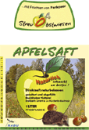

<div class="row imgs ">
	<div class="col-md-4 col-sm-4 col-xs-6">
		<a class="thumbnail" href="../bilder/design/apfeletigr.gif">
			
		</a>
	</div>
</div>


<div class="row last description">
	Dieses Etikett wurde für NABU Berlin e.V. entworfen. Es wurde eine neue Aktion gestartet, Direktapfelsaft naturbelassen von
	Streuobstwiesen herzustellen.
</div>


<div id="arrow-back">
	<a href="design3.html"> </a>
</div>

{% include design/reflink.html %}
